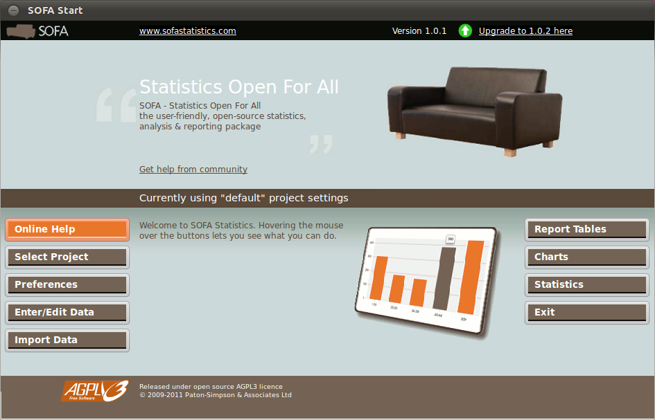
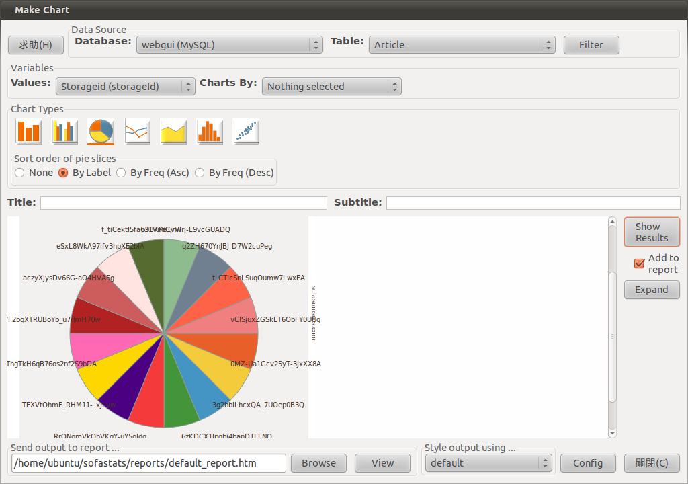
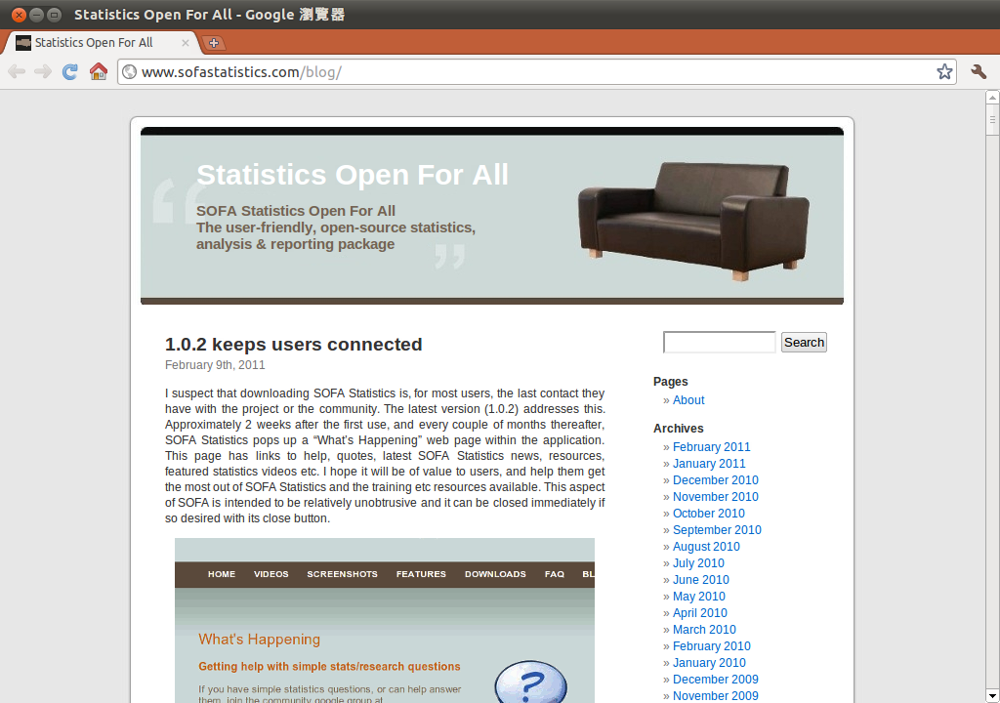
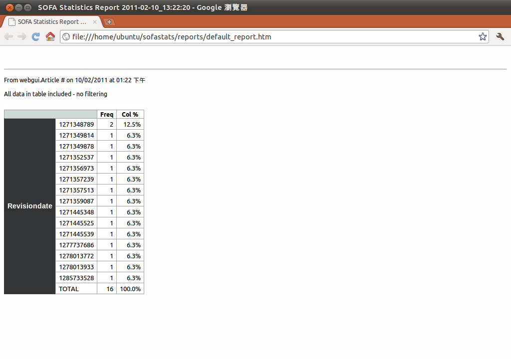
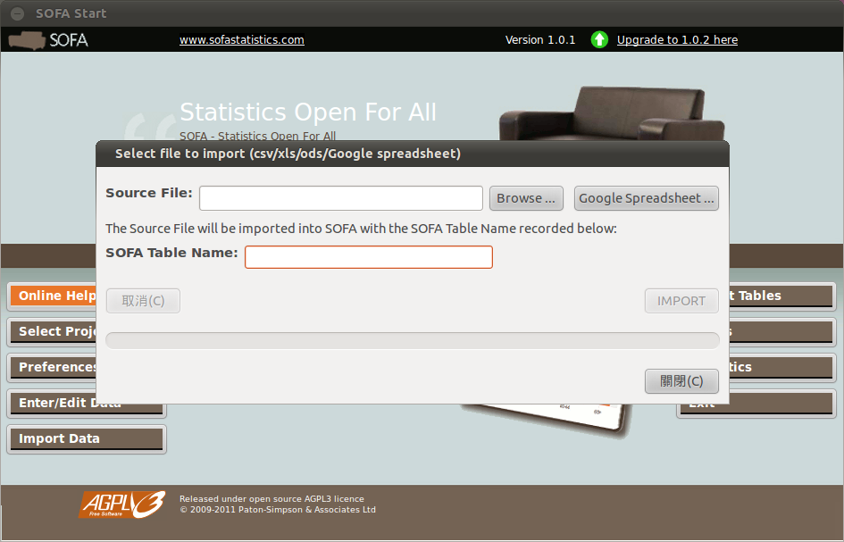

坐在沙發上輕鬆完成資料庫統計報表 - SOFA Statistics

- 官方網站：https://www.sofastatistics.com/
- Debian、Ubuntu 套件下載網址：https://ncu.dl.sourceforge.net/project/sofastatistics/sofastatistics/1.0.1/sofastats-1.0.1-1_all.deb (1.1MB)
- 其他發行版本下載網址：https://ncu.dl.sourceforge.net/project/sofastatistics/sofastatistics/1.0.2/sofastats-1.0.2.tar.gz (1.3MB)
簡介
在需要處理大量資料的場合，大多數人都會採用資料庫系統作為處理資料的輔助工具。資料庫系統除了可以作為資料的存放空間以外，也能進行一些簡單的資料分析工作，或是自行撰寫程式並連結資料庫系統以進行資料查詢，並產生一些簡單的報表以便在會議中作為簡報資料使用。這樣的作業模式已經是行之有年的方式，相信大多數的資料庫管理人員，對於這樣的作業模式並不會感到陌生。雖然以程式語言搭配資料庫系統進行資料查詢或統計相當容易，但這樣的操作方式可能只適合在採用固定資料庫、表格與資料欄位作為統計資料來源的場合使用。例如原先撰寫的程式之中使用預先指定的資料庫欄位進行操作，如果想要統計其他資料庫或其他欄位的相關資料，便可能需要修改程式，甚至需要變更處理的演算法。雖然這樣的作業方式也是一種可行的解決方案，但很明顯的，這樣的方式並不是相當有效率的工作模式。因為只要需求的條件一旦變更，相關人員便需要進行程式的修正，處理上顯然較為麻煩。
除了資料來源可能隨時會變更以外，另外一種相當常見的需求，是資料庫的統計報表需要採用圖表加以呈現，才能讓其他人在最短的時間內了解整個統計報表的重點所在。網路上有許多的繪圖程式庫可以作為程式產生圖表的輔助工具使用，但這仍然需要自行了解這些程式庫的使用與呼叫方式，也必須撰寫相關的程式碼，才能達到自動產生統計圖表的目的。如果這些工作都能自動完成，自然可以減輕許多資料庫管理員的工作負擔，不再需要整天埋首於電腦鍵盤之中，只為了產生幾個簡單的報表。事實上可以作為資料庫統計與報表產生器的工具非常多，且各有各的特色。本文所要介紹的 SOFA Statistics，也是其中的一種。此工具的全名為 Statistics Open For All，而其縮寫 SOFA 則表示這套工具可以達到十分容易使用的目的，如同坐在沙發上一樣的舒適與簡單。

▲SOFA 的操作主畫面。
操作簡易化的設計
SOFA 本身可以提供許多資料統計與分析功能，也能作為報表輸出程式使用。由於主要設計目的是為了減少資料庫處理人員的工作負荷，因此在安裝與操作上都儘量以最簡單的方式進行設計。以在 Ubuntu 或 Debian 發行版本上安裝 SOFA 為例，只需要直接下載 SOFA 官方網站所提供的套件檔，再使用「dpkg」指令直接安裝即可。至於其他的 Linux 發行版本，也可以下載原始檔進行編譯與安裝，整個過程相當簡便。除了 Linux 版本以外，為了讓其他作業系統的使用者也能體驗這套工具程式的優點，因此 SOFA 也直接提供 Windows 或 Mac OS 的執行檔，不需要擔心這套工具只能在特定的作業系統或發行版本中使用。除了安裝相當方便以外，SOFA 的操作介面也相當直覺。即使是初次使用 SOFA 的使用者，只需要花個幾分鐘大致瀏覽一下整個系統的操作介面，便能了解 SOFA 所提供的大部份功能，並直接進行操作。如果希望在會議的簡報檔之中直接使用資料庫的統計數據，利用 SOFA 產生輸出報表也是相當方便的作業方式。SOFA 不但提供了多元化的報表格式，而且還可以使用十分美觀的輸出報表格式。相較於傳統的統計數據輸出報表，SOFA 所產生的報表可以給人比較深刻的印象，因為許多資料庫統計工具即使可以產生正確的輸出資料，但在畫面呈現上常常會一次提供太多數據資料，讓人眼花聊瞭亂，不知道該從何看起。這樣的問題在 SOFA 中並不會出現，因為 SOFA 已經考慮到輸出報表的美化問題，大多數情況下都能直接看到統計報表的重點所在，不至於在會議中因為輸出報表的混亂情況，導致會議討論時失去焦點的情況發生。

▲SOFA 可以產生許多美觀的輸出報表，且操作相當簡便。
以開放原始碼方式釋出的 SOFA，雖然已經盡力讓操作與作業流程儘量簡化，但仍然有可能產生使用者不知道該如何開始使用、或是在遇到問題時無法自行解決。如果使用者有能力自行修改 SOFA 的原始碼並加強 SOFA 的功能，自然可以自行處理。如果使用者沒有這方面的技術能力，或是不希望浪費太多人力、時間在這樣的一套工具身上，亦可以考慮直接使用 SOFA 的商業支援服務。或許採用 SOFA 的商業支援服務需要支出一些預算，但如果可以因此減少許多不必要的人力與時間浪費，或許也是一個可行的應用模式。
持續增加的新功能
SOFA 本身是一套新推出不久的軟體專案計畫，所以各種新功能仍然在持續加入與改善當中。經由熱心使用者的回報，有一些現有的功能可能存在程式臭蟲，或是在操作上不夠直覺，也可能一些特殊功能並未在現今版本當中直接支援。這些回報訊息都會被 SOFA 的開發團隊一一檢閱，並篩選出最急需修改的部份在未來的版本中慢慢加入。可以想像得到的是，經由使用者回報與功能修正這樣來回的過程，未來新版本的 SOFA 一定會有更多方便的統計與報表輸出功能可以使用。如果有一些已被納入會加入的新功能，因為人力資源問題或是優先順序問題而暫時不加入 SOFA 的支援功能當中，通常 SOFA 還是會將這些功能列出，只是會加入一個「已計畫新增功能」的標示，表示此功能目前雖然尚未支援，但在將來的版本當中一定會加入，除非有發生任何不可抗拒的問題，才有可能取消。為了方便使用者查詢 SOFA 新功能的發展現況，SOFA 開發團隊也成立了一個專屬的部落格，可以讓使用者了解此專案目前已支援與預計在將來支援的功能為何。此部落格的網址為「https://www.sofastatistics.com/blog/」，亦可使用 RSS 直接訂閱。

▲SOFA 提供專屬部落格作為新功能的介紹網站。
美觀的輸出報表格式
前面也曾經提到，許多資料庫的統計程式只將重心放在資料的統計與分析身上，忽略了輸出報表的美觀與否亦會直接影響使用者的操作觀感。而對於報表的產生過程是否提供了足夠的自動化協助，也是採用此類型工具時的考量重點。但在 SOFA 之中，使用者並不需要擔心這些問題。因為 SOFA 可以採用自動化的方式直接產生各種常見的輸出報表，而且這些輸出報表可以提供相當完整的訊息，甚至可以在不需要經過修改的情況下直接套用到簡報檔案之中，作為會議提報資料使用。SOFA 的輸出報表除了可以自動產生以外，更重點的是在大多數的情況下，都不需要使用者進行手動調整即可提供相當完善的功能支援。如果要進行輸出報表的重新統計，只需要調整輸出參數即可，不需要以人工方式進行重工處理，在使用上顯得相當方便。除了提供各種報表功能以外，SOFA 也相當重視輸出報表的呈現方式。與其他資料庫統計軟體不同的是，SOFA 的輸出報表不但提供了相當多元化的輸出報表格式，而且在外觀上也下了相當程度的苦工，讓使用者可以直接了解這些輸出報表所要呈現的意義。例如一般常見的長條圖，如果只看到圖片，可能覺得是一張平凡無奇的輸出圖表而已。但只要將滑鼠移到輸出報表畫面的圖表上，即可看到該項目的相關數據。不但考慮到操作上的簡便與美觀等相關考量，也提供了互動式的操作模式。
大多數 SOFA 的統計資料都可以採用 HTML 網頁檔案的方式直接輸出，只要以瀏覽器開啟該檔案即可看到 SOFA 所產生的輸出報表。比較特別的是，SOFA 在產生報表檔案之後，接下來如果有其他的統計資料需要輸出，則會以附加的方式在此網頁的後方加入新報表的輸出資訊。如此一來，如果希望比較不同時期或是不同統計參數所產生的報表，便可以相當容易的在同一個檔案之中看到輸出結果。如果使用的輸出格式是以表格方式進行處理，則這些輸出資料都可以在 MS Excel 或是 OpenOffice Calc 之類的試算表軟體之中直接開啟，可以增加許多處理方面的彈性。

▲SOFA 可以直接將各種不同的統計報表輸出至同一個網頁檔案之中。
支援大多數的資料庫系統
許多資料庫統計工具雖然聲稱可以支援眾多不同的資料庫系統，但有一些是以取巧的方式達到這樣的支援功能，也就是先將資料庫的數據輸出成該工具程式可以接受的格式，再以匯入資料的方式加入該工具可以直接支援的資料庫系統之中。雖然廣義而言也可以說是支援多種資料庫系統，但畢竟在處理上比較麻煩，在資料量較大的應用場合，也可能需要一些時間進行處理。SOFA 則是直接支援許多不同的資料庫系統，並可以直接存取存放在這些資料庫系統之中的資料。如果使用者可以提供資料庫的存取帳號，甚至可以直接經由 SOFA 進行資料庫內部資料的編輯工作，或是使用簡單的資料過濾功能將處理焦點放在特定範圍的資料當中。目前 SOFA 支援的資料庫系統有 MySQL、Microsoft Access、SQLite、PostgreSQL、MS SQL Server 等各種主流的資料庫系統。至於 Oracle 系統，目前雖然仍然無法直接支援，但已經被列入 SOFA 未來要支援的資料庫系統之一。
如果要進行統計的資料存放在數個不同的資料庫系統之中，SOFA 亦可直接進行處理，不需要擔心會因此而無法使用 SOFA 進行資料統計與分析。因為 SOFA 可以處理存放在任何資料庫之中的資料，只要該資料庫的系統是 SOFA 有直接支援即可。
如果希望直接將資料匯入 SOFA 內建的 SQLite 資料庫再進行處理，亦可使用 SOFA 所提供的匯入功能。SOFA 可以直接匯入 MS Excel 的試算表檔案格式，但是這個功能只在 Windows 版本之中提供，且匯入 Excel 檔案時並不需要在系統之中安裝 MS Excel 亦可進行。如果匯入資料的來源格式為開放文件格式中的試算表格式 (OpenDocument Spreadsheet, ODS) ，SOFA 可以直接支援 OpenOffice Calc 與 Gnumeric 這二套試算表軟體所儲存的 .ods 檔案。至於最常見的 CSV 格式，以及越來越多人使用的 Google Docs 線上文件系統所產生的試算表檔案，也都能匯入 SOFA 的內建資料庫之中。所有匯入的資料都能在 SOFA 之中進行查看與編輯，如果需要變更匯入資料的內容，亦可使用此功能進行處理。

▲支援許多常見的資料庫系統，亦可直接匯入資料至內建的資料庫之中。
結語
以往一談到要擷取資料庫系統中的資料進行分析，甚至要製作成美觀又具有直覺性的輸出報表，可能大多數的資料庫管理員都會感到十分痛苦。因為如果沒有適當的工具作為輔助，直接存取資料庫的內容並進行統計，會是一件相當複雜的工作，稍一不慎可能影響資料庫系統的執行效能，甚至傷害到存放其中的資料內容。在尚未使用 SOFA 之前，大多數人可能很難想像資料庫系統的統計與分析功能，居然可以如此簡便的完成。SOFA 除了擁有許多與眾不同的功能支援以外，甚至還能產生一些具有相當水準的輸出報表，對於經常需要分析資料庫內容，並製作會議簡報的人而言，可以說是一套不可或缺的工具軟體。
作者簡介
翁卓立逢甲大學資訊工程學系、台灣科技大學電子所畢業，目前擔任韌體研發工作，主要使用 Embedded Linux 進行產品開發。著有「Linux 進化特區：Ubuntu 10.04 從入門到精通」等書。